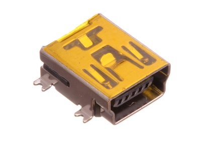
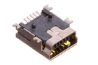

Mini SMD USB Socket - USN2

Summary
Name: Mini SMD USB Socket
ID: USBS-MN-M-SMDS-02
Hex ID: USN2
WebPage: https://github.com/oomlout/oomlout-OOMP/wiki/USBS-MN-M-SMDS-02
Short URL: http://oom.lt/USN2
Revision History: https://github.com/oomlout/oomlout-OOMP/blob/master/parts/USBS-MN-M-SMDS-02/
| Type |
Size |
Color |
Description |
Index |
USBS
USB Socket |
MN
Mini |
M
Metal |
SMDS
SMD |
02
|
Images

About
This part is awaiting a description.
Specifications
| Info |
Value |
| Type |
USB Socket |
| Size |
Mini |
| Color |
Metal |
| Description |
SMD |
Extra Details
Spotted a mistake, want to add more? Let us know oomp@oomlout.com
All images and resources are licensed [CC BY-SA] unless otherwise stated (ie. the datasheets)